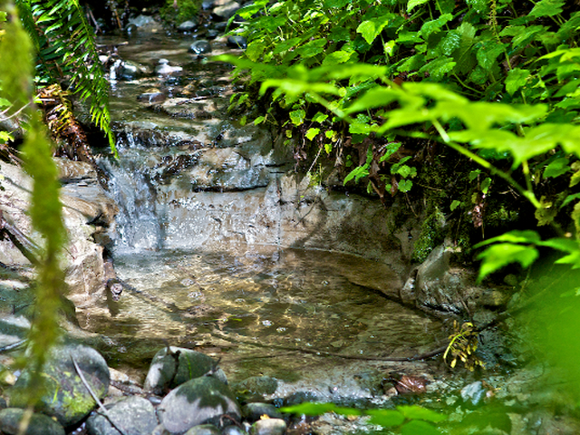
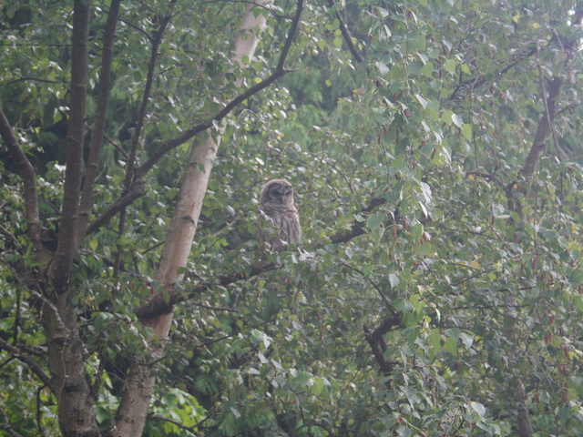
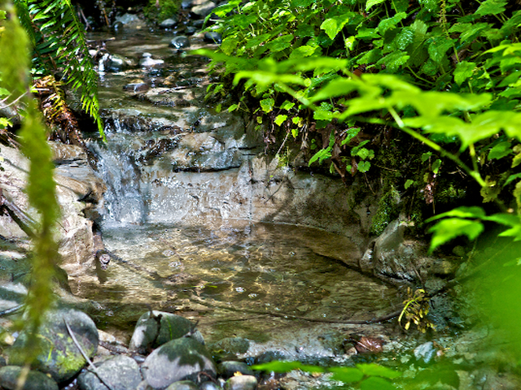
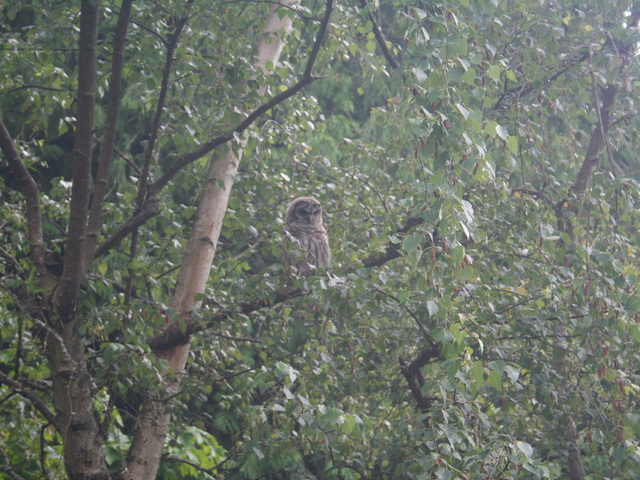
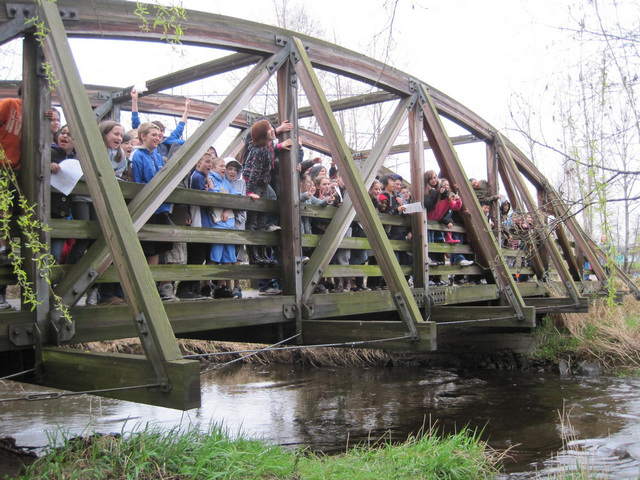
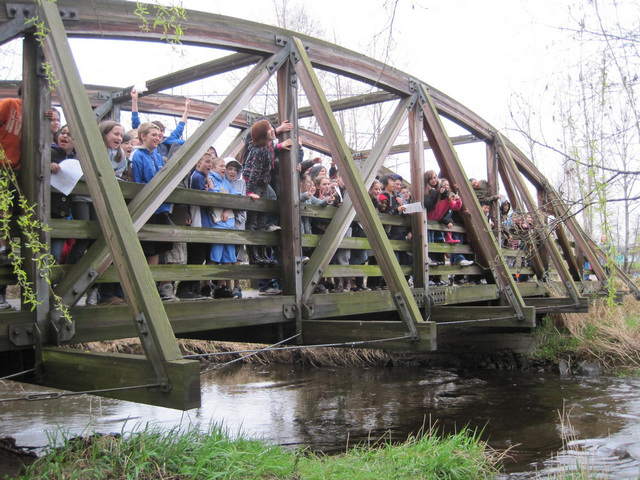
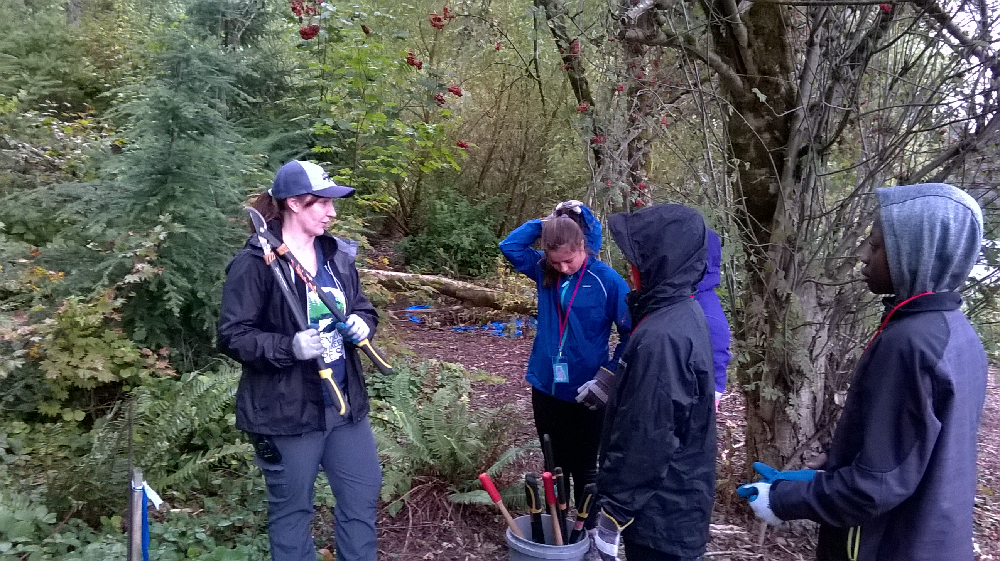
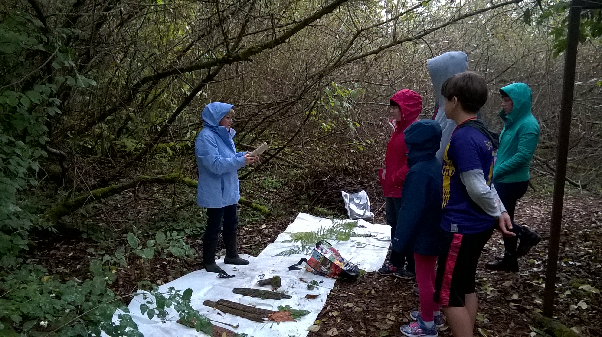
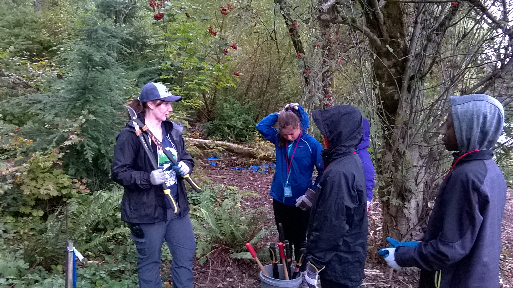
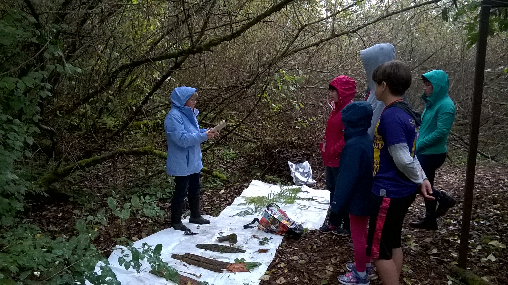

Enjoying the Forest

Trails and Parking
Stewards to 64 acres of stunning biodiversity.
Trails and Parking

 



 



.jpg)


 




The Friends of North Creek Forest invites you to join them in a unique and rewarding endeavor. Discover and explore the outdoors in our beautiful and diverse 64 acre forest located right here in your own neighborhood.
We are open to the public so come and explore. Bring the kids and allow them to discover all the natural wonderment a forest has to offer. Hikes and exploration offers a wonderful family bonding time that is clean, fun and healthy.
Friends Of North Creek Forest offers a wide range of educational programs as well. We offer educational field trips for grade school students as well as advanced programs for college students working on a degree. We are only able to offer these programs through your generous Donations, so please give to support your local community.
To maintain and improve the ecological function of North Creek Forest ​through Education, Stewardship and Conservation in perpetuity.